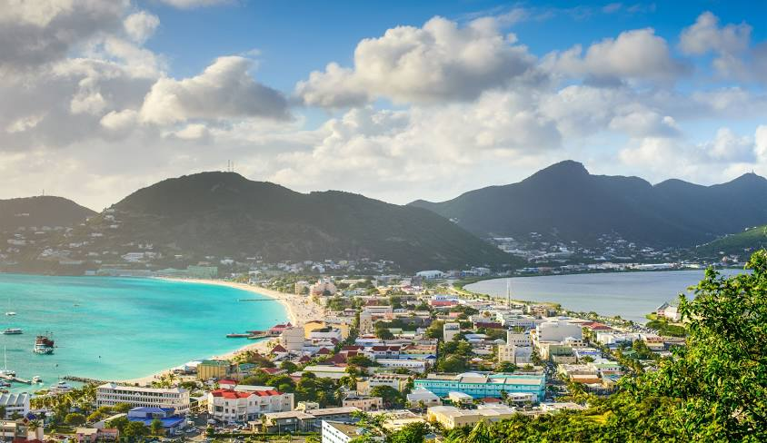

My trip to Mountain was charming
Deadline :
Millennia ago, the island used to be an extension of the Teknaf peninsula, but at a later time some portion of this peninsula got submerged and thus the southernmost part of the aforementioned peninsula became an island, and was disconnected from the Bangladesh mainland. The island was first settled in the 18th century by Arabian merchants, who named it "Jazira". During British occupation the island was named after Millennia ago, the island used to be an extension of the Teknaf peninsula, but at a later time some portion of this peninsula got submerged and thus the southernmost part of the aforementioned peninsula became an island, and was disconnected from the Bangladesh mainland. The island was first settled in the 18th century by Arabian merchants, who named it "Jazira". During British occupation the island was named after the then Deputy Commissioner ofthe then Deputy Commissioner of